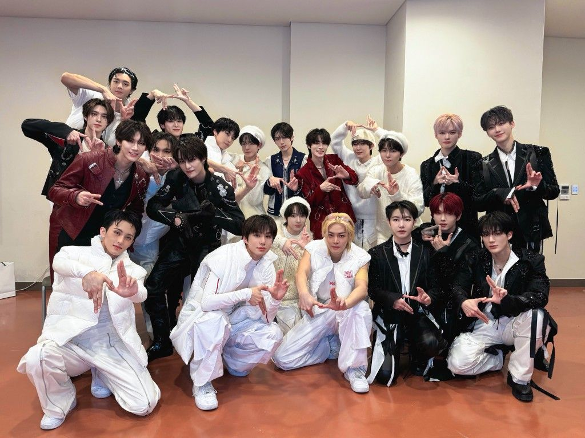

Cerita Singkat NCT

NCT, singkatan dari Neo Culture Technology, adalah boy group asal Korea Selatan yang dibentuk oleh SM Entertainment. Grup ini dikenal karena konsepnya yang unik dan inovatif, yaitu memiliki anggota yang tidak terbatas dan dibagi menjadi beberapa sub-unit berbeda yang beroperasi secara simultan di seluruh dunia. Sejak diperkenalkan pada tahun 2016, NCT telah mendefinisikan ulang batas-batas K-Pop dengan model "unit rotasi dan persatuan" mereka. Konsep ini memungkinkan fleksibilitas dan adaptasi yang luar biasa, di mana anggota dapat berpindah unit atau bergabung dalam proyek kolaborasi NCT U, memberikan warna musik yang beragam dan basis penggemar global yang tersebar luas.
Saat ini, NCT terdiri dari beberapa sub-unit utama yang memiliki fokus dan citra yang berbeda-beda. NCT 127 adalah unit yang berbasis di Seoul dan dikenal dengan musik hip-hop/R&B yang kuat dan berorientasi pada kinerja yang intens, menjadikannya salah satu unit yang paling dikenal secara internasional. NCT DREAM awalnya berkonsep unit remaja dengan musik yang cerah dan upbeat, namun kini telah bertransisi menjadi unit permanen dengan fokus pada pertumbuhan dan narasi masa muda. Terakhir, WayV adalah unit yang berbasis di Tiongkok yang mempromosikan musik dengan fokus pada pasar Tiongkok Raya, menampilkan sisi yang lebih elegan dan artistik dari grup.
NCT telah mencapai kesuksesan komersial yang signifikan dan diakui karena kualitas musik dan koreografi mereka yang tinggi. Mereka sering merilis album dalam skala besar, seperti proyek NCT 2020 dan NCT 2021, yang menyatukan semua anggota dari berbagai unit untuk proyek berskala penuh, seringkali memecahkan rekor penjualan. Diskografi mereka mencakup berbagai genre, mulai dari trap yang berat hingga pop yang ringan, yang semuanya menyatu di bawah estetika Neo Culture yang futuristik. Sebagai salah satu grup K-Pop dengan pertumbuhan tercepat dan konsep paling ambisius, NCT terus memperluas pengaruh mereka, membuktikan bahwa konsep unlimited mereka adalah formula yang berhasil dalam industri musik global.
NCT adalah salah satu grup K-Pop yang paling inovatif dan ambisius. Dengan sistem unit mereka yang terus berkembang, mereka terus menantang batasan-batasan konvensional grup idol, menawarkan pengalaman musik yang kaya dan beragam bagi para penggemar di seluruh dunia.